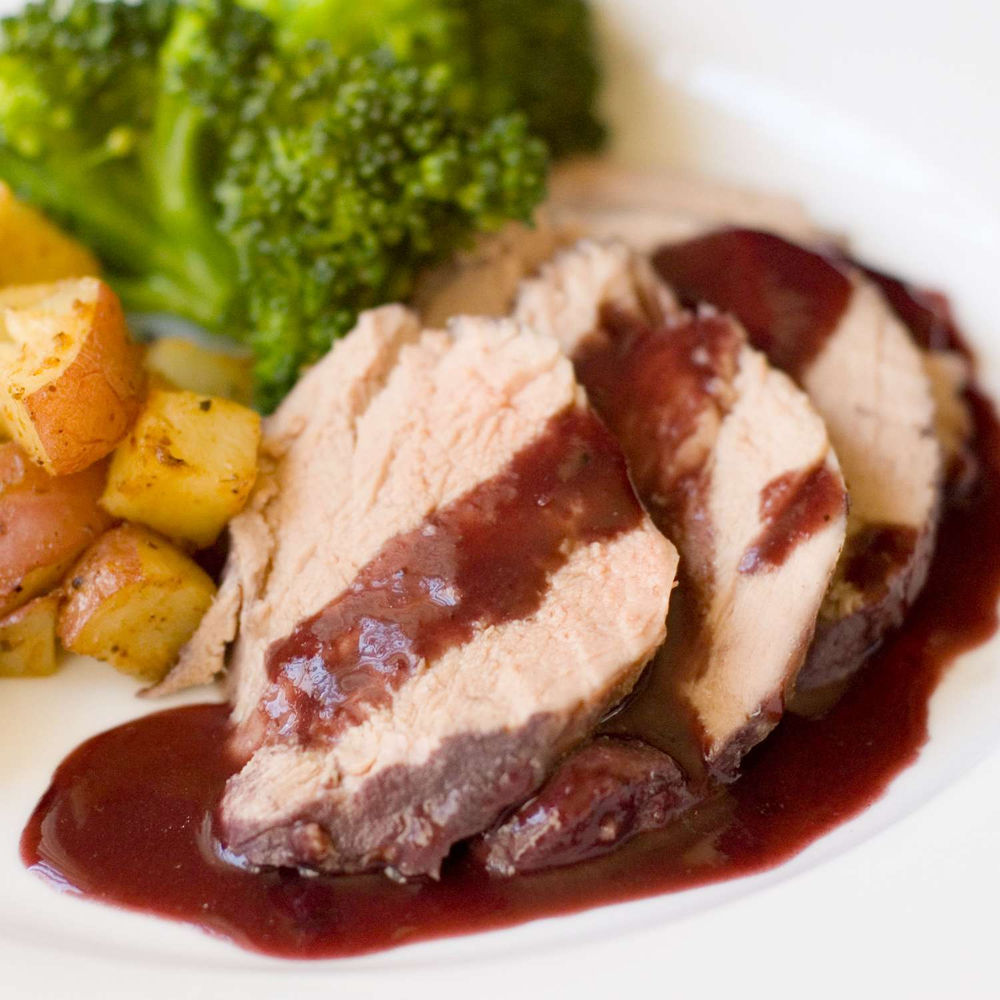

Burgundy Pork Tenderloin

Description
Simple and easy meal to prepare, consisting of a pork tenderloin seasoned and baked. Served with potato.
Ingredients
- 2 pounds pork tenderloin
- 1/2 teaspoon salt
- 1/2 teaspoon ground black pepper
- 1/2 teaspoon garlic powder
- 1/2 onion, thinly sliced
- 1 stalk celery, chopped
- 2 cups red wine
- 1 packet dry brown gravy mix (or 0.75 oz)
Steps
-
Preheat oven to 350 degrees F (175 degrees C).
-
Place pork in a 9x13 inch baking dish, and sprinkle meat with salt, pepper and garlic powder. Top with onion and celery, and pour wine over all.
-
Bake in the preheated oven for 45 minutes.
-
When done baking, remove meat from baking dish, and place on a serving platter. Pour gravy mix into baking dish with wine and cooking juices, and stir until thickened. Slice meat, and cover with the gravy.
Home